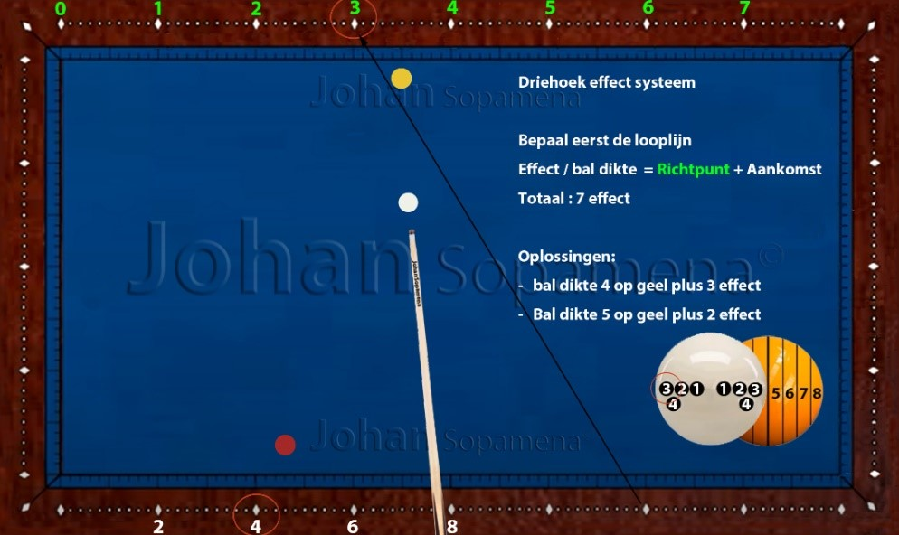

Hoofdstuk 10 — Driehoek effect en bal-dikte systeem
10.1 Inleiding
Het Driehoek Effect Systeem is een geavanceerd driebandensysteem dat de relatie beschrijft tussen effect, bal-dikte en looplijn. De naam “driehoek” verwijst naar de drie variabelen die samen een voorspelbare geometrische verhouding vormen.
Dit systeem wordt vooral gebruikt bij stoten waarbij de speler een nauwkeurige balans moet vinden tussen dikte en effect om de juiste hoek te creëren. Het is een ideaal systeem voor spelers die hun precisie willen verfijnen in complexe patronen.
10.2 Basisprincipe van het Driehoek Effect Systeem
Het systeem werkt op basis van een driehoekige verhouding tussen:
- Dikte van de aanspeelbal
- Hoeveelheid effect
- Afwijking na de eerste band
De basisregel luidt:
➤ Meer effect + dunnere bal = grotere hoekverandering
De speler moet dus een balans vinden tussen dikte en effect om de gewenste looplijn te creëren.
10.3 Dikte-indicaties
De dikte van de aanspeelbal bepaalt in grote mate de hoekverandering. De meest gebruikte diktes zijn:
- ¼ bal — zeer dun, maximale curve
- ⅓ bal — dun, sterke curve
- ½ bal — gemiddelde curve, meest stabiel
- ¾ bal — dik, kleine curve
In combinatie met effect vormt dit de basis van het driehoekmodel.
10.4 Effectsterktes
De drie standaard effectsterktes zijn:
- 1 effect — lichte afwijking
- 2 effect — standaard driebandenlijn
- 3 effect — maximale afwijking
Door dikte en effect te combineren, ontstaat een driehoek van mogelijke looplijnen.
10.5 Uitleg en voorbeelden
De onderstaande figuren tonen typische situaties waarin het Driehoek Effect Systeem optimaal werkt. De looplijnen laten zien hoe dikte en effect samen de route van de speelbal bepalen.
Let vooral op:
- hoe de curve verandert bij dunnere of dikkere bal
- hoe effect de lengte van de lijn beïnvloedt
- hoe snelheid de curve versterkt of verzwakt
- hoe het richtpunt verschuift bij andere aankomstpunten
Door deze patronen te trainen, ontwikkelt de speler een zeer fijn gevoel voor de balans tussen dikte en effect.
Figuur 01: Driehoekmodel basis
 Figuur 01: Basisdiagram van het driehoekmodelFiguur 02: Dikte en effect gecombineerd
 Figuur 02: Relatie tussen dikte en effect
Figuur 02: Relatie tussen dikte en effect
Figuur 03: Correcties bij verschillende snelheden
 Figuur 03: Invloed van snelheid op de curve
Figuur 03: Invloed van snelheid op de curve